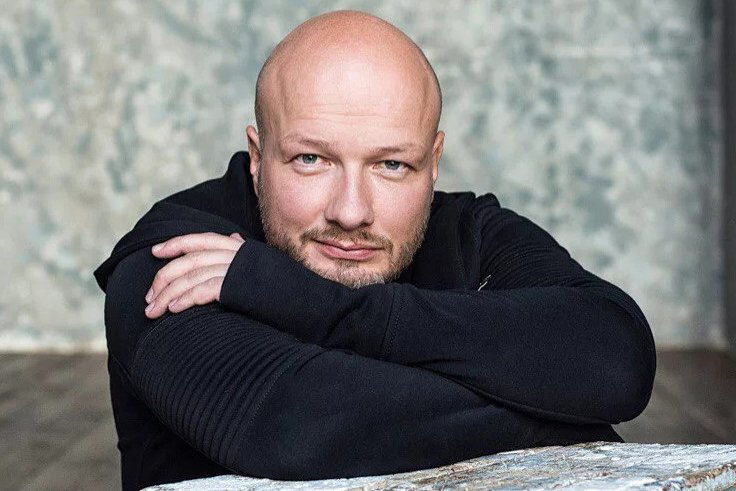
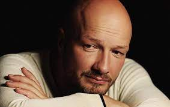

Никита Панфилов Владиславович
У этого артиста с детства было все, чтобы стать известным – знаменитые родители, неординарная
внешность и талант, которым щедро наделила его матушка-природа. Никита Панфилов сумел
распорядиться этими подарками, и сейчас он известный и востребованный актер и ведущий на ТВ.
Настоящее признание пришло к артисту после выхода на экраны сериалов «Сладкая жизнь», «Пес»,
«Мажор».

Свою первую роль на сцене Никита сыграл в пятилетнем возрасте. Ему поручили образ
Ивана-царевича. В те годы он даже и не думал о сцене, а вот мама очень хотела, чтобы из сына
получилась настоящая звезда. Сам Панфилов видел себя хирургом или спортсменом.
Со спортом у мальчика сложились нормальные отношения, еще в младших классах отец записал его
на
греко-римскую борьбу, и в своих мечтах уже возводил сына на пьедестал почета. Вначале все
складывалось успешно, Панфилов получил звание мастера спорта, его включили в состав
олимпийского
резерва. Однако вскоре он ушел из секции, ему надоело мотаться по сборам и тренировкам, и он
решил
прислушаться к маме, которая постоянно твердила сыну о театральном вузе.
После получения аттестата, Панфилов стал студентом актерского факультета института
современного
искусства. Однако доучиться ему не дали, пришла повестка в армию. После демобилизации он
решил продолжать начатое дело, и попытался поступить одновременно в
четыре вуза – «Щуку», ВГИК, Школу-студию МХАТ и «Щепку». Он прошел в два последних, но
остановил свой выбор на Школе-студии МХАТ, и попал на курс к Игорю
Золотовицкому. Диплом об окончании театрального вуза Никита Панфилов получил в 2006-м.

Театральная биография Никиты стартовала в годы студенчества. Дебютным спектаклем начинающего
артиста стала постановка «Осада», которая очень понравилась зрительской аудитории. Режиссер
Евгений Гришковец ставил этот спектакль в МХТ им.Чехова
Следующими работами Панфилова стали постановки «Ундина», «Женитьба», «С любимыми не
расставайтесь». В те годы Никиту Панфилова звали в основном на роли второго плана, но он
сумел сделать их
яркими и заметными. Самыми удачными проектами в творчестве Панфилова можно считать ленты
«Инспектор Купер»,
«Любит не любит», «Мажор». Приглашали его и в рейтинговые проекты, среди которых особое
место занимают «Черчилль»,
«Анжелика», «Путейцы». Одним из лучших проектов Панфилова можно считать «Духless», где он
перевоплотился в Мишу
Вуду.
Сам Никита очень любит эту ленту, и рассказывает о той невероятной атмосфере, которая царила
на съемках. Именно она и партнеры в лице Артура Смольянинова, Данилы Козловского, Марии
Кожевниковой и Сергея Белоголовцева, помогли ему очень органично вжиться в свою роль. Эта
лента послужила своеобразной отправной точкой в карьере Панфилова. После этого ему сразу
предложили роли главных героев в фильмах «Личное дело» и «Точка взрыва».
Его герои – яркие и колоритные, и этому способствует неординарная внешность артиста и умение
очень точно вживаться в образ. Режиссеры начали предлагать молодому артисту самые
разноплановые проекты, и он очень
органично смотрится в любом из них. Чего стоит только детектив под емким названием «Пес»,
где Никита играет сотрудника полиции
Макса Максимова, попадающего со своим псом в самые невероятные ситуации, и каждый раз находя
из них выход.
Артист так самозабвенно играет, что старается не обращать внимания на травмы, полученные во
время съемок. Однажды партнер Панфилова так врезал ему по голове пепельницей в одном из
эпизодов, что его
пришлось госпитализировать и накладывать швы
Весной 2017-го Никиту Панфилова пригласили в программу «Ты супер!». Это была мечта одного из
участников — 13-летнего парня из Тобольска, который очень хотел познакомиться с Никитой. Руслан сказал, что часто видит себя в образе героя Панфилова в полюбившемся фильме «Пес», и
что это дает ему уверенность в своих силах, которой порой так не хватает и в жизни и тем
более на сцене. Актер вышел на сцену, сказал парню много теплых и ободряющих слов, после которых он снова
поверил в свои силы и свою мечту.